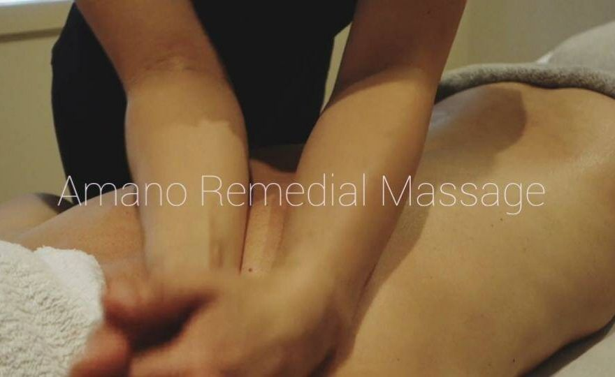
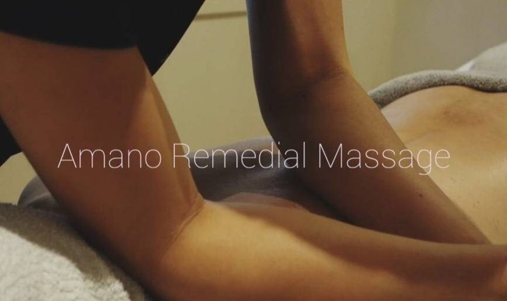

No one has a perfectly balanced body and mind.
At AMANO Remedial Massage, I don’t just focus on pain or injuries. No one has a perfectly balanced body and mind, and even small imbalances can develop into bigger problems over time. But if we work together, we may be able to prevent them before they start. I aim to help your body recover, move more freely, and stay in balance for the long term.
The AMANO Method is an innovative and unique style of Remedial Massage that combines the knowledge and techniques of both Western and Eastern practices. Pressure is adjusted from gentle (superficial) to firm (deep), according to your comfort level.
For clients seeking treatment for pain or imbalance, a Range Of Motion assessment will be included to help identify areas of restriction. The treatment may also incorporate techniques such as Soft Tissue Release, Myo-Fascial Release, Japanese Shiatsu, and Trigger Point therapy to relieve tension, improve mobility, enhance posture, and promote healthy circulation.
The AMANO Method aims to bring the body into better balance and support overall physical and mental well-being.

